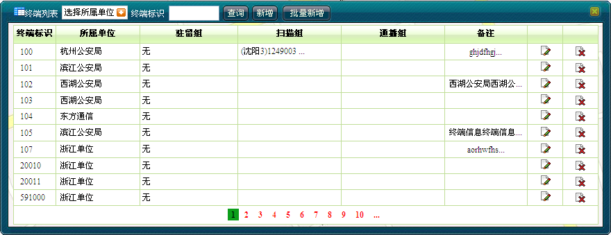
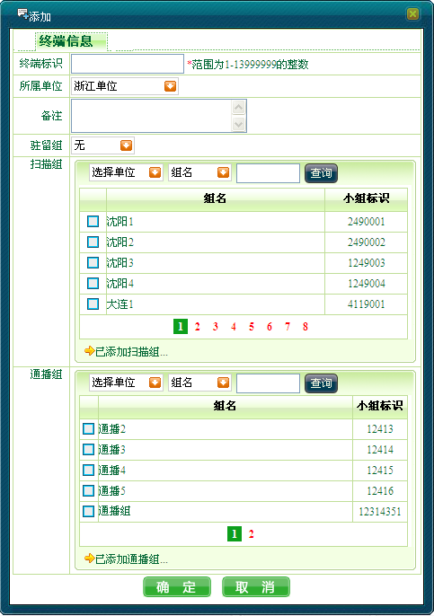
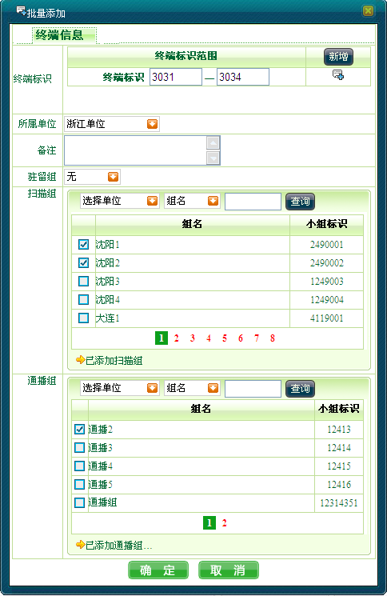

增加终端操作步骤如下：
增加终端操作步骤如下：
1）单击［基础信息/终端信息维护］，弹出终端列表，如下图1所示。

图1. 终端列表
2）单击＜新增＞，弹出“添加”终端信息对话框，如下图2所示，用户输入新增终端的信息。

图2. 添加终端信息
3）单击＜确定＞完成操作。如果添加成功，系统将向用户提示添加成功信息；如果添加失败，则向用户提示错误原因。
 说明：
说明：
关联编组的小组标识的值应为小组表或通播组表中的有效小组标识。
系统内终端标识的值具有唯一性，故若输入的终端标识已存在，则添加终端信息失败。
分级调度员只能添加同属一个分级单位或者该分级单位的下属单位下的终端。
 批量增加终端操作步骤如下：
批量增加终端操作步骤如下：
1）单击［基础信息/终端信息维护］，弹出终端列表。
2）单击＜批量增加＞，弹出“批量添加”终端信息对话框，在终端标识范围右侧单击＜新增＞按钮，用户输入一个或多个新增终端的标识范围，单击添加图标，根据实际需要添加扫描组及通播组，如下图3所示。

图3. 批量添加终端
3）单击＜确定＞完成操作。
说明：
单行批量增加不能超过100个终端。
Copyright © 2012 Eastcom, Inc. All rights reserved. |
||